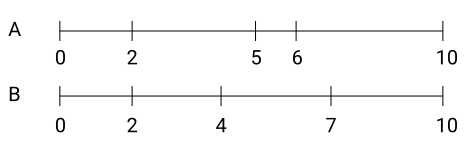
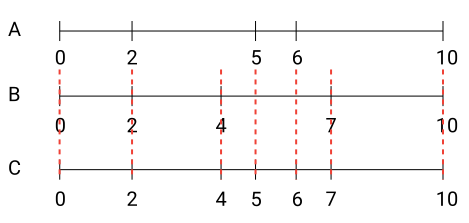

Merging timelines¶
Let's say we have the 2 timelines as shown in the picture below. For simplicity sake we mark the nodes on the timeline with the numbers 0 to 10. As can be seen, the ranges do not always coincide. 
In practice this could be 2 satellites in a datavault model connecting to the same hub. In your datamart you might want to have all attributes put together in chronological order.
Concept¶
The first step is to create a third timeline that has all the nodes the two other timelines also have. See picture below. 
Then we determine for each interval of the newly created timeline which parts of the previous 2 timelines should be referenced.
Note
It is good to note that an interval of the newly generated timeline is always smaller than or equal to the interval that was in the original timelines.
Note
It is also good to remember that since we have created the new nodes from the old nodes, the new node always corresponds to a node in one of the original timelines.
By inspecting the picture we can easily come up with the result:
| C-start | C-end | A-start | A-end | B-start | B-end |
|---|---|---|---|---|---|
| 0 | 2 | 0 | 2 | 0 | 2 |
| 2 | 4 | 2 | 5 | 2 | 4 |
| 4 | 5 | 2 | 5 | 4 | 7 |
| 5 | 6 | 5 | 6 | 4 | 7 |
| 6 | 7 | 6 | 10 | 4 | 7 |
| 7 | 10 | 6 | 10 | 7 | 10 |
Rules¶
Now we have the results, we can now reverse-engineer the rules to follow for connecting the correct parts of the original timeline with the new timeline. At first thought you might get the following 3 rules, when either one of them is true then there should be a match. In these set of rules we try to match C with B:
- The begin nodes are the same
- C-start is equal to B-start (0-2), (2-4), (7-10)
- The end nodes are the same
- C-end is equal to B-end (0-2), (2-4), (7-10)
- The new interval lies completely within the interval of the original
- C-start (5-6) is larger than B-start and B-end is smaller than A-end
However, these rules can be simplified by taking into account the notes we have made earlier.
Tip
We do not need to check for the end node!
The reason that we do not need to check for the end node is because the nodes of timeline C was generated from A and B. This means that it is never going to overshoot a range from one of the originals. So if the begin point of C is within a range of A, then by definition the end point of C will also be in the same range of A.
Conclusion
So the only check we need to perform per interval of C, is that C-start is between A-start and A-end. Depending on how your timelines are setup (whether the end point of the previous record is the same as the start of the next) you might want to exclude or include your between filter.
Rules for immediately closed records¶
In case there are records that have the exact same begin and end, and you have confirmed that that is functionally correct and desired, you need to have logic for this special case and for the normal case. For the special case we also need to add an extra record on timeline C with the C-start and C-end equal.
To the rule for the normal case we need to add that the begin and end are not coinciding.
Tip
If you are certain that records with begin and end times equal only occur at the end of your timeline. Then you can simplify the logic by not having to add above mentioned filter to your normal case. This is because we only use the start node of the new timeline to do the matching. That means there is never going to be a check on your last node (which can only be an end node).
The rules for the special case would be:
- C-start equals C-end, and
- C-start equals A-start, and
- C-end equals A-end
Code implementation¶
For the code sample we will be using SQL. We will also be using Common Table Expressions to divide up the steps.
Getting the nodes¶
1 2 3 4 5 6 7 8 9 10 | |
Generating the new timeline¶
Here we assume that you are using a SQL dialect that supports QUALIFY such as snowflake and databricks.
If the SQL dialect does not have this functionality, you would need to add an extra
CTE for filtering.
1 2 3 4 5 6 7 8 9 | |
| special case | |
|---|---|
1 2 3 4 5 6 7 8 9 10 11 12 13 14 15 16 17 | |
Attaching original records to the new timeline¶
1 2 3 4 5 6 7 8 9 10 | |
In case we are dealing with the special case, we have:
| Special case | |
|---|---|
1 2 3 4 5 6 7 8 9 10 11 12 13 14 15 16 | |
Full code example¶
The following example can be run in Snowflake, just copy and paste. For the special case we have added an additional example.
1 2 3 4 5 6 7 8 9 10 11 12 13 14 15 16 17 18 19 20 21 22 23 24 25 26 27 28 29 30 31 32 33 34 35 36 37 38 39 40 41 42 43 44 45 46 47 48 49 50 51 52 53 | |
1 2 3 4 5 6 7 8 9 10 11 12 13 14 15 16 17 18 19 20 21 22 23 24 25 26 27 28 29 30 31 32 33 34 35 36 37 38 39 40 41 42 43 44 45 46 47 48 49 50 51 52 53 54 55 56 57 58 59 60 61 62 63 64 65 66 67 68 69 70 71 72 73 74 | |